まずOSを書き込みます
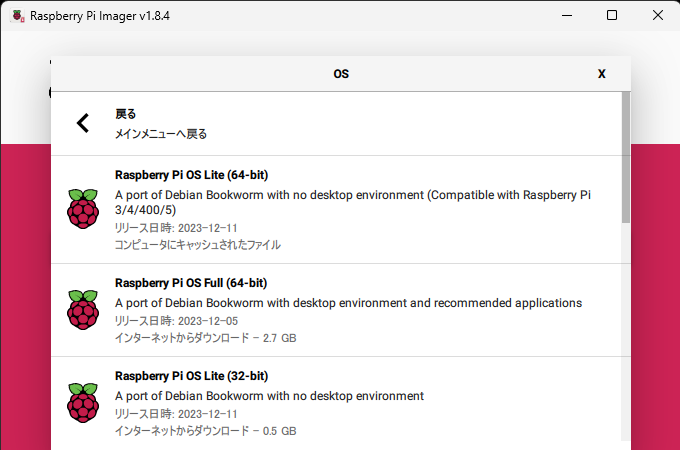OSはRaspberry Pi OS Lite(64-bit)を書き込みます

ここで設定を編集するを押します
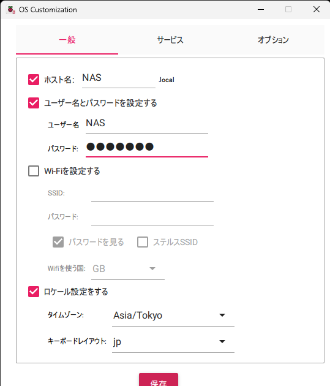設定をします
保存を押して「はい」を押します
書き込みが終わったらRaspberry Piに刺して起動します
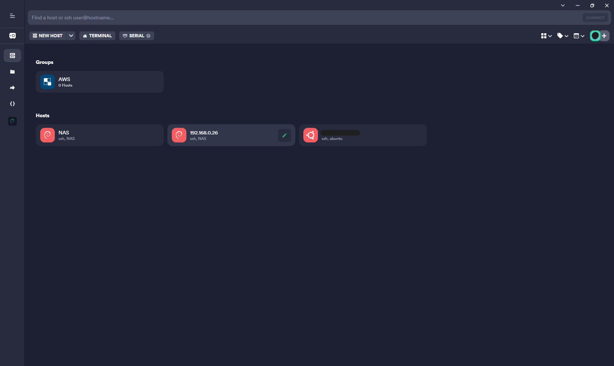SSHで接続します
wget -O - https://github.com/OpenMediaVault-Plugin-Developers/installScript/raw/master/install | sudo bash
とコマンドに打ち15分ぐらい待ちます(途中で再起動します)
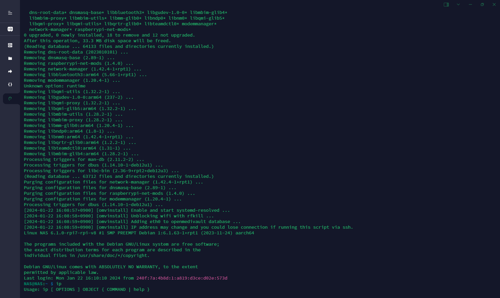sudo nano /etc/systemd/network/99-default.link
とコマンドに打ち
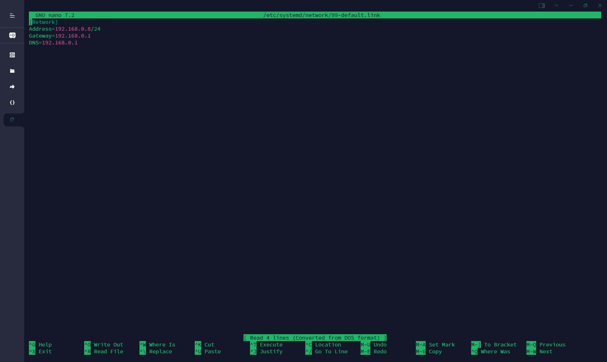[Network]
Address=固定したいIPアドレス/24
Gateway=192.168.0.1
DNS=192.168.0.1
と入力して
Ctrl+X → Y → Alt+D → Enter
終了して
sudo systemctl restart systemd-networkd
でネットワークを再起動
Raspberry PiのIPまたはホスト名またはホスト名.localをアドレスバーに打ち込む
例
192.168.0.8
http://NAS
http://NAS.local
ユーザー名:adminパスワード:openmediavaultを入力
システム > 時刻と日付
時刻サーバをntp.nict.jpにする
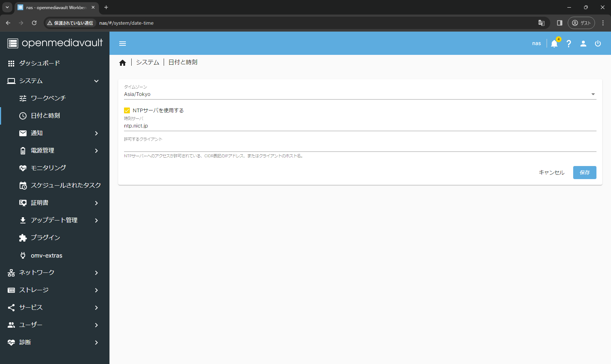変更を保存
ストーレージ > ディスク
マウントしたいストレージを選択
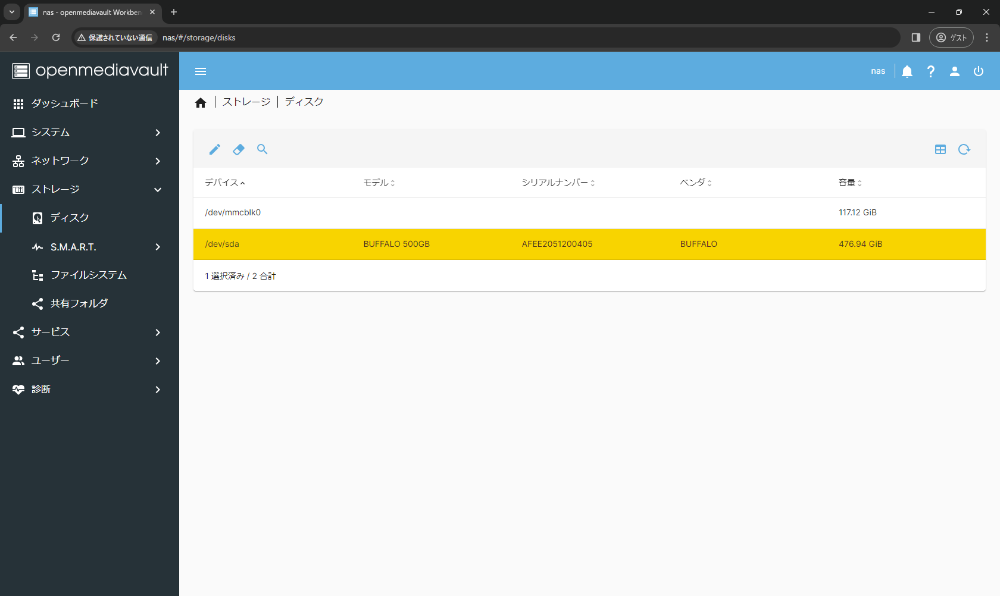消しゴムマークをクリック
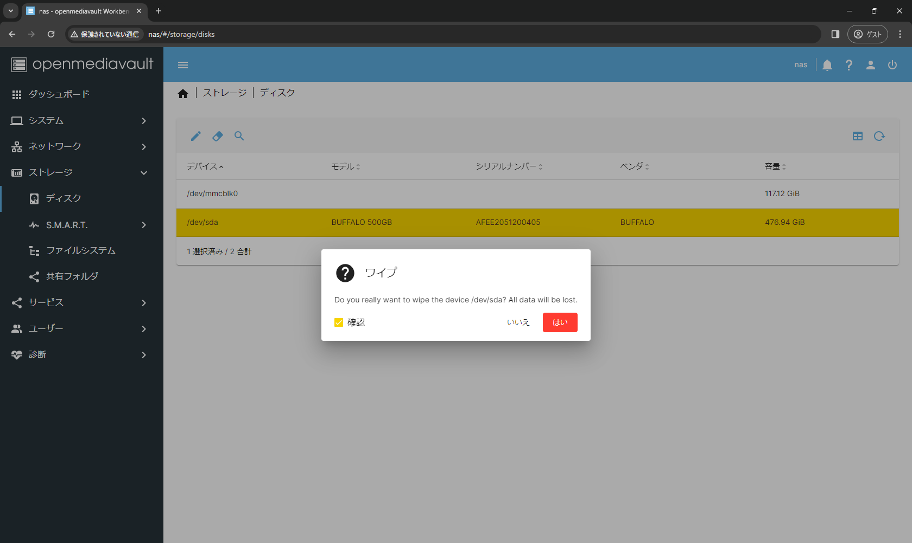クイックまたはセキュアを選択

ストーレージ > ファイルシステム
+マークをクリック、EXT4を選択
さっきワイプしたデバイスを選択
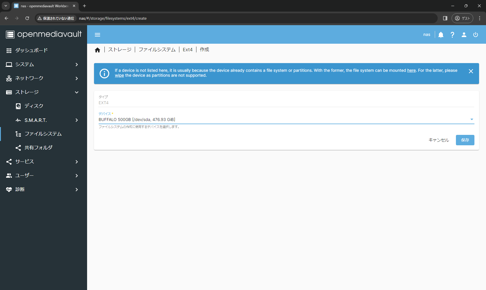作成したファイルシステムを選択
変更を適用を押す
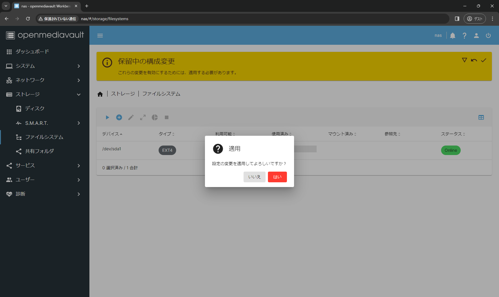ストーレージ > 共有フォルダ +マークをクリック
名前を入力
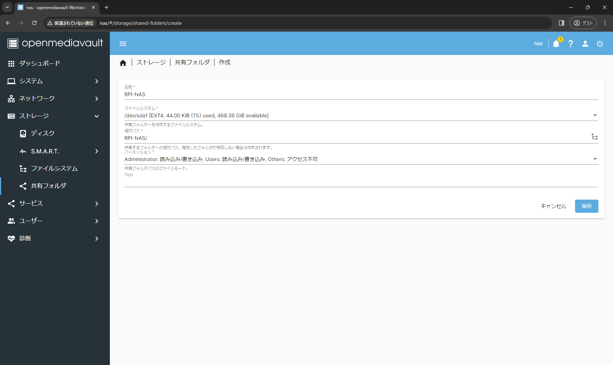変更を保存
サービス > SMB/CIFS
サービス > SMB/CIFS > 共有
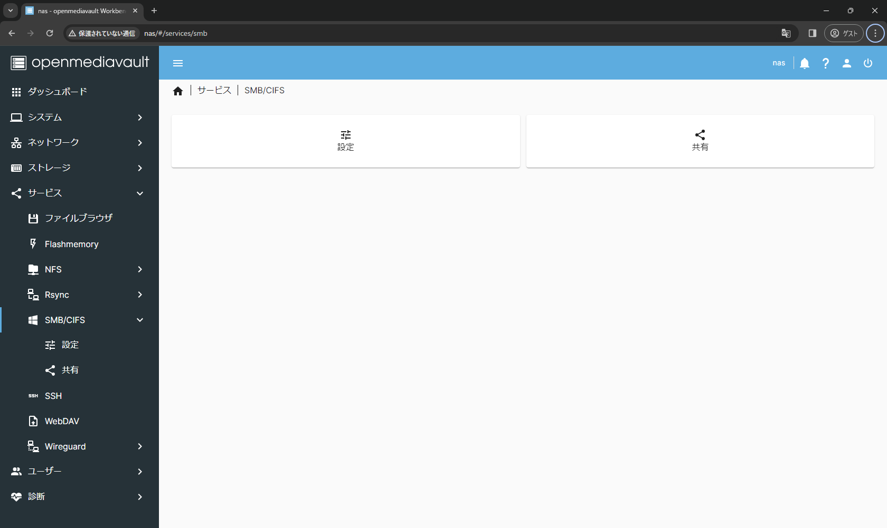+マークをクリック
有効にチェック、共有フォルダを選択、保存
サービス > SMB/CIFS > 設定
有効にチェック、時刻サーバはお好みで、保存
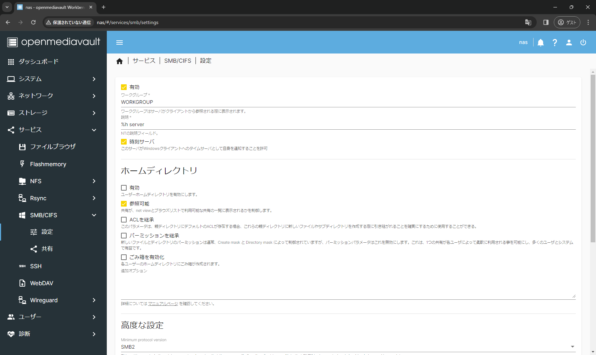ユーザーマネジメント > ユーザー
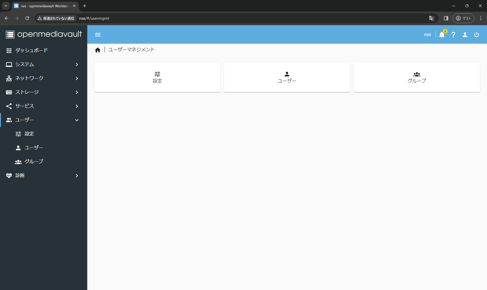+マークをクリック、作成
ユーザー名とパスワードを設定、ユーザーをグループusersに追加、保存
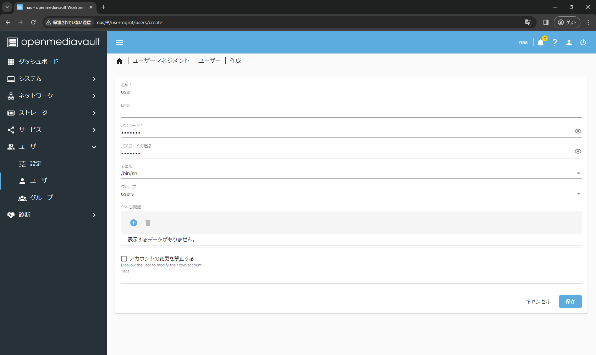エクスプローラーのPCで右クリック > ネットワークの場所を追加
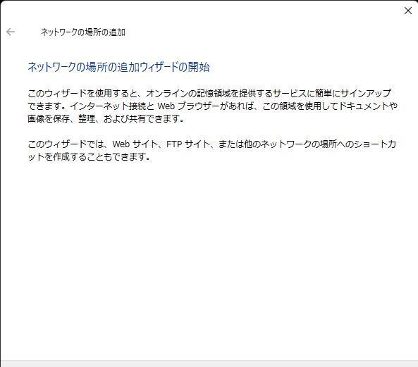「¥¥Raspberry Piのホスト名¥共有フォルダの名前」を入力
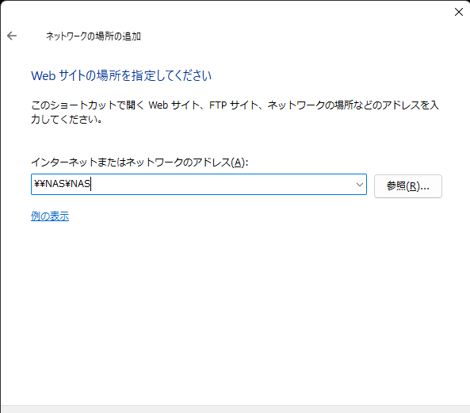さっき作成したアカウントを入力
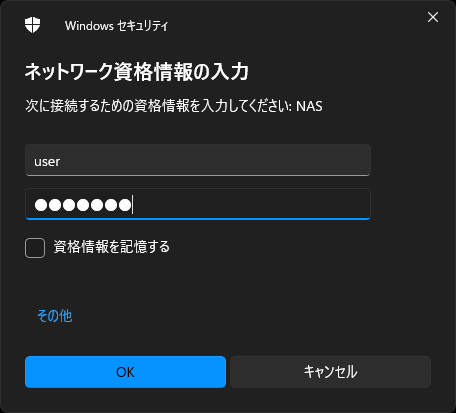名前を入力
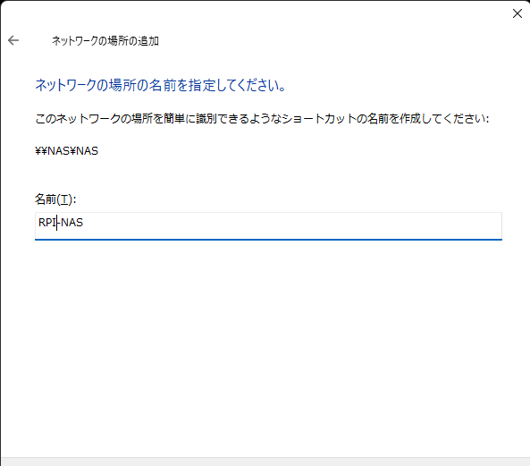認識した
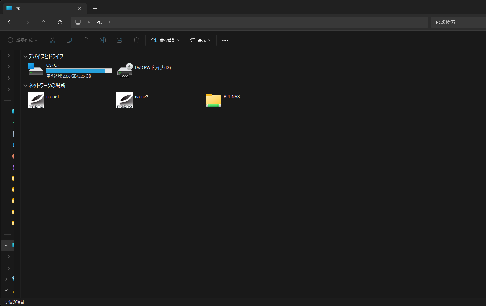